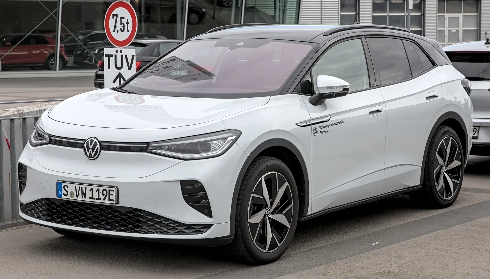
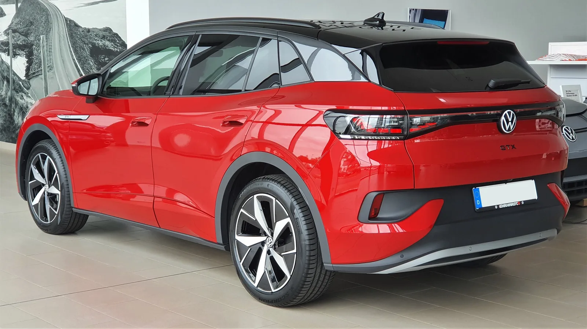
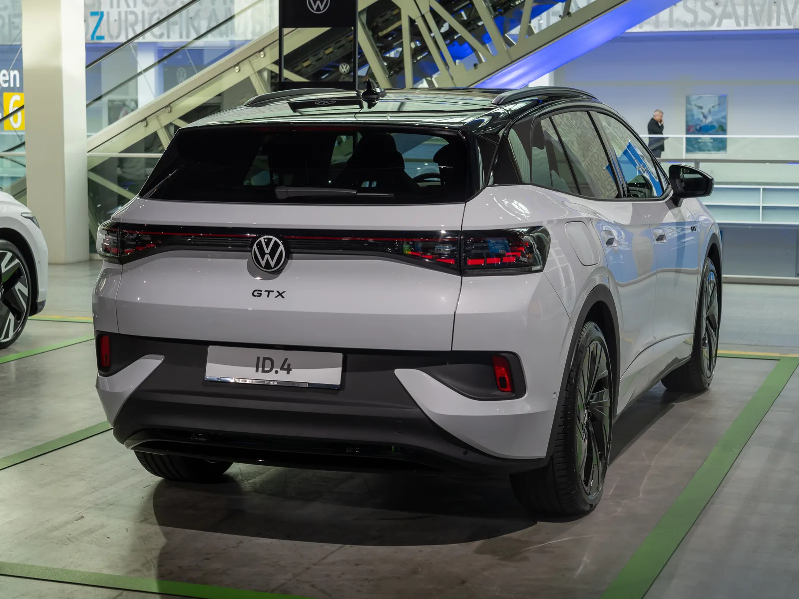

▲ 폭스바겐 매장에 전시된 ID.4 GTX. 측면 펜더의 'GTX' 뱃지가 고성능 버전임을 알린다
1. ID.4 GTX, 국내 재출시 관측 배경
폭스바겐의 고성능 전기 SUV 'ID.4 GTX'가 국내 시장에 다시 등장할 수 있다는 관측이 나오고 있다. ID.4 GTX는 2021년 유럽에서 처음 공개된 뒤 2022년 9월 국내에도 5,490만원의 가격으로 정식 출시된 바 있다. 당시 1,300여 대의 초도 물량이 계약 3,500여 대를 기록하며 조기 완판됐던 모델이다. 이후 국내에서는 단종된 상태였는데, 업계에서는 2026년 9월경 새로운 GTX 물량이 다시 국내에 투입될 것으로 보고 있다.
다만 이는 아직 폭스바겐코리아의 공식 발표가 아닌 업계 전망 수준이라는 점은 짚어둘 필요가 있다. 실제로 2026년 9월 현재까지도 폭스바겐코리아 측의 공식 출시 발표나 보도자료는 나오지 않았으며, 관련 소식은 여전히 소수의 매체 보도에 근거한 전망에 머물러 있다. 정확한 트림 구성과 가격은 공식 발표를 통해 확정될 전망이다.

▲ ID.4 GTX 전면부. 좌우로 이어지는 라이트 바와 하단의 GTX 전용 범퍼 디자인이 특징이다 ⓒ Wikimedia Commons
2. 유럽 사양 기준 듀얼모터 220kW(299마력)
유럽에서 판매 중인 ID.4 GTX는 전륜과 후륜에 각각 모터를 얹은 듀얼모터 사륜구동 방식으로, 합산 최고출력 220kW(299마력)를 낸다. 일반 ID.4가 후륜구동 단일모터 위주로 구성된 것과 달리, GTX는 상시 사륜구동과 더 높은 출력으로 스포티한 주행 감각을 강조한 트림이다. 유럽 판매 가격은 5만 415유로(약 7,700만원)부터 시작한다.
| 구분 | 구동방식 | 최고출력 |
|---|---|---|
| ID.4 (일반형) | 후륜구동(단일모터) | 트림별 상이 |
| ID.4 GTX | 사륜구동(듀얼모터) | 220kW(299마력) |
📍 국내 사양은 아직 미확정
위 출력·가격은 유럽 판매 사양 기준이다. 국내 출시 시 배터리 용량, 출력, 정확한 가격은 유럽 사양과 다를 수 있으며 아직 공식 발표되지 않았다. 2022년 국내 판매됐던 1세대 GTX는 국내 인증 기준 1회 충전 주행거리 405km를 기록한 바 있다.
3. 현재 국내 ID.4 라인업과 보조금 상황
현재 국내 판매 중인 2026년형 ID.4는 프로 라이트, 프로 트림으로 구성되며 가격은 5,299만원부터 6,041만원 사이다. 폭스바겐 ID.4는 2026년 국고보조금 최대 432만원을 받는 것으로 알려졌는데, 이는 수입 승용 전기차 가운데 최고 수준이다. 2025년 424만원 대비 10만원 늘어난 수치로, 지자체 보조금까지 더해지면 실구매가는 이보다 더 낮아질 수 있다.
GTX가 국내에 재출시된다면 기존 ID.4 라인업의 최상위 고성능 트림으로 자리잡을 가능성이 크며, 보조금 산정 기준이 되는 차량 가격과 배터리 효율에 따라 지원금 규모도 달라질 수 있다.

▲ 서울 시내에서 포착된 현재 판매 중인 ID.4 일반형. GTX가 재출시되면 이 라인업의 최상위 고성능 트림으로 합류하게 된다 ⓒ Wikimedia Commons

▲ ID.4 GTX 후측면. 리어 범퍼 하단에어 디퓨저와 GTX 전용 로고가 적용됐다 ⓒ Wikimedia Commons
4. 외관과 실내, GTX만의 차별점
ID.4 GTX는 일반형과 플랫폼을 공유하지만 전용 범퍼, 블랙 하이그로시 루프, 20인치 이상의 전용 알로이 휠 등으로 외관에서 확실한 차별화를 뒀다. 실내에는 레드 스티치가 들어간 시트와 전용 로고가 적용되며, 유럽 사양 기준 어댑티브 서스펜션(DCC)이 옵션으로 제공돼 일반형 대비 한층 다잡힌 주행 감각을 구현한다.
✅ ID.4 GTX 국내 출시, 이것만은 확인하세요
· 국내 출시는 2026년 9월경으로 업계에서 전망 중(공식 발표 전)
· 유럽 사양 기준 듀얼모터 220kW(299마력), 상시 사륜구동
· 2022년 1세대 GTX는 5,490만원에 출시돼 조기 완판
· 2026년 ID.4는 국고보조금 최대 432만원, 수입 전기차 중 최고 수준
· 정확한 국내 트림·가격은 폭스바겐코리아 공식 발표 확인 필요
5. 국내 전기 SUV 시장에서의 위치
ID.4 GTX가 국내에 재출시된다면 테슬라 모델 Y, 기아 EV6, 현대 아이오닉5 N 등과 경쟁할 것으로 예상된다. 특히 보조금 혜택을 받으면서도 사륜구동과 준수한 출력을 갖춘 수입 전기 SUV라는 점에서, 3천만원 후반부터 시작하는 일반형 ID.4와 함께 폭스바겐코리아의 전기차 판매를 이끄는 축이 될 가능성이 있다. 최신 소식은 폭스바겐코리아 공식 채널을 통해 확인할 수 있다. 바로가기

▲ ID.4 후면에 새겨진 GTX 엠블럼. 일반형과 구분되는 고성능 트림 전용 배지다 ⓒ Wikimedia Commons
6. 정리
ID.4 GTX는 2022년 국내에서 조기 완판됐던 전례가 있는 폭스바겐의 고성능 전기 SUV다. 2026년 9월경 국내 재출시가 업계에서 거론되고 있지만 아직 공식 확정 사항은 아니다. 유럽 사양 기준으로는 듀얼모터 220kW(299마력)와 상시 사륜구동을 갖췄으며, 국내 출시 시 정확한 트림과 가격, 보조금 규모는 폭스바겐코리아의 공식 발표를 통해 확인해야 한다.